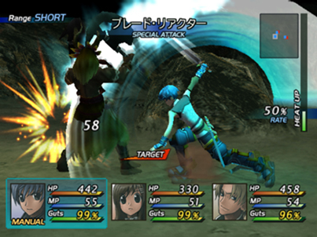
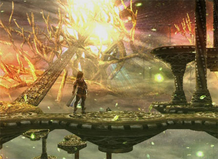
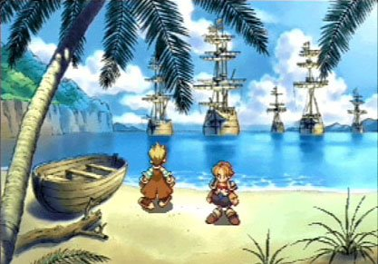
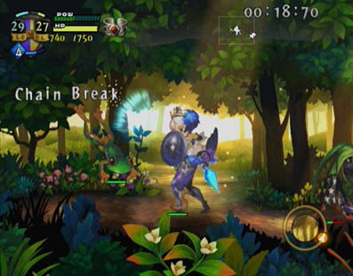
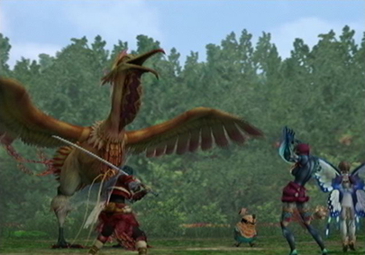

La difficulté dans les jeux vidéo
L'un des thèmes qui revient de façon récurrente dans les débats sur le game design est celui de la difficulté. On entend beaucoup de choses : si certains critiquent les joueurs assistés et appellent à un retour au « oldschool », d'autres tentent de diminuer le challenge afin d'élargir leur public au maximum (c'est l'un des piliers de la politique de Nintendo, qui a pourtant donné son nom à l'expression « Nintendo Hard »).
Le but de cet article est de proposer une ébauche de réflexion sur la difficulté dans le jeu, en essayant de la définir et de dégager quelques principes pour réussir à éviter certains écueils.
Commençons tout d'abord par essayer de définir les termes — ou plutôt le terme — de notre sujet : la difficulté. Pour faire simple, on peut dire qu'il s'agit juste d'une mesure de l'effort qu'un joueur va devoir fournir pour surmonter un obstacle dans un jeu. Mais si l'on y réfléchit bien, il apparaît qu'il n'y a pas une, mais plusieurs formes de difficultés. Essayons d'en dégager quelques aspects.
I. Vrai challenge et fausse difficulté
Une difficulté bien dosée peut constituer l'un des éléments essentiels d'un gameplay. Pour le joueur, réussir une épreuve qui a nécessité un effort conséquent sans que cela tourne à l'arrachage de cheveux peut constituer une gratification immense. Le game design a beaucoup évolué depuis les années 80 et l'on est passé de jeux conçus contre le joueur à des jeux conçus pour le joueur. Néanmoins, de nombreux jeux continuent de présenter ce que j'appellerai une fausse difficulté. Souvent, il s'agit de rallonger la durée de vie de façon artificielle (bien qu'on puisse discuter s'il s'agisse réellement de « durée de vie ») ou d'échapper à une étiquette « trop facile » qu'on épingle sur beaucoup de jeux récents.
Une discontinuité dans la progression : le joueur fait littéralement face à un mur, le plus souvent sous la forme d'un boss, dont la difficulté est très nettement surélevée par rapport à ce qu'il a pu affronter avant.
Un petit pic de difficulté peut très bien apporter à un combat un tour plus dramatique : l'exemple type est le combat « de fin de CD1 » qu'on trouve dans moult RPG, comme le premier combat contre Dhoulmagus dans Dragon Quest VIII. Mais un changement de difficulté mal dosé se solde dans la plupart des cas par un abandon du jeu ou par une phase pénible de level grinding.
Un exemple particulièrement marquant est celui de Star Ocean III, où le niveau de tous les monstres du jeu se voit relevé d'un seul coup de façon scandaleuse. Pour le joueur, il y a un sentiment d'injustice, d'un manque de fair-play de la part des développeurs qui changent tout un coup les règles du jeu sans prévenir.

Une mauvaise maniabilité : un travers qu'on rencontre dans de nombreux jeux qui prétendent ainsi donner une touche rétro à leur gameplay, où un personnage peu maniable rend le jeu beaucoup plus difficile qu'il ne devrait l'être.
Proposer un saut à la limite des compétences du héros et avec un timing serré peut constituer une vraie difficulté. Proposer un héros dont la physique est contre-intuitive, des boîtes de collision abusives ou de mauvais contrôles de caméra constitue une fausse difficulté. Un bon jeu de plate-forme rétro nécessite des sauts millimétrés, mais propose une maniabilité impeccable en contrepartie — l'exemple le plus frappant qui vienne à l'esprit est celui de Super Meat Boy.
Nombre de vieux jeux de plate-formes souffrent grandement de ce travers. Un exemple assez remarquable est celui de la série des Resident Evil où la maniabilité du héros (la touche gauche ne sert pas à aller vers la gauche mais à pivoter sur la gauche, par exemple) est totalement contre-intuitive. Néanmoins, si cela peut être vu comme un défaut, on peut aussi considérer que cela participe du stress ambiant et contribue d'une certaine façon à l'ambiance du titre. A discuter, donc.
Des chiffres trop élevés : un travers qui consiste à multiplier les grandeurs comme les points de vie des ennemis ou des boss ou à copier-coller des passages entiers dans un niveau, pour créer une durée de vie artificielle.
Il arrive que les développeurs trouvent un combat trop court, même s'il est parfaitement dosé. L'idée est donc, sans modifier la difficulté réelle du combat, de multiplier les points de vie d'un boss (ou à dupliquer les différentes parties d'un niveau). Ceci oblige le joueur à répéter outre mesure un pattern, ce qui n'augmente pas la difficulté mais seulement le temps de jeu et tend à donner une impression de répétitivité.
Un travers de Square-Enix dans ses jeux récents. Kingdom Hearts II, malgré des combats très bien pensés, propose un certain nombre de boss à la jauge de vie invraisemblablement longue, ce qui nécessite parfois de répéter plus d'une dizaine de fois un pattern très long.
De même pour Final Fantasy XII où certains boss pas particulièrement difficiles ont un nombre de HP dépassant la dizaine de millions : on passe plus d'une heure à attendre qu'un boss peu menaçant finisse par bien vouloir s'effondrer, ce qui détruit par ailleurs toute la tension dramatique du combat.
Rétention d'information : le joueur ne sait pas que ce qu'il a pu manquer au début du jeu peut rendre le jeu beaucoup plus difficile, voire impossible à finir par la suite, ou que ceci l'empêchera d'accéder à certains éléments du jeu.
Très connu et donc souvent évité : peu de choses ont autant de chances de provoquer une dépression nerveuse chez un joueur que de savoir qu'il ne pourra jamais terminer le jeu parce qu'il a manqué, douze heures plus tôt, un ridicule petit bout de papier dans un placard secret. Néanmoins, une version plus soft est toujours à l’œuvre.
Un exemple dans Valkyrie Profile II : vers la moitié du jeu, le joueur voit deux personnages quitter son équipe et en échange, reçoit des équipements. La puissance de ces équipements dépend du niveau des personnages qui quittent l'équipe. A moins d'être au courant du fonctionnement de cette récompense (ce qui est impossible sans une solution) et d'avoir passé quelque chose comme trois heures à faire du level grinding pour passer plus d'une dizaine de niveaux, la suite du jeu devient très difficile. A l'inverse, si le joueur fait tout ceci dans l'idée d'obtenir une arme digne de ce nom et d'avoir accès une difficulté normale pour la suite du jeu, tout est déséquilibré dans l'autre sens et devient trop facile.
Un exemple un peu différent est celui de Valkyrie Profile où l'obtention de la vraie fin nécessite d'aller farfouiller dans une solution, sans quoi vous passerez très largement à côté. Persona 4 reprend ce même principe, même s'il est vrai que c'est avec plus de brio (je n'en dis pas plus pour ne pas trop spoiler, mais posez vous la question de savoir si vous avez vraiment obtenu la véritable fin du jeu :] ).

Roue de la fortune : l'issue de l'épreuve ne dépend pas dans une mesure raisonnable des actions du joueur et est principalement déterminée par le hasard.
Épouvantable. Cela peut nécessiter de répéter un passage du jeu (souvent pénible) à de très nombreuses reprises et provoque chez le joueur un sentiment d'injustice, puisqu'il ne peut lui-même rien y faire.
Très présent dans les RPG dans le principe des drops. Réaliser certaines quêtes nécessite de tuer un type de monstre qui libère parfois un objet. Si le taux d'apparition de l'objet est trop bas, cela peut tourner au monster bashing bête et méchant. Particulièrement sournois si combiné avec des chiffres trop élevés. L'obtention des objets ultimes pour le craft est particulièrement infâme pour cette raison dans Final Fantasy XIII.
Un exemple un peu différent est la roue utilisée pour les combats du fort mal réputé Unlimited Saga, qui rend difficile l'élaboration de tactiques. A l'inverse, c'est en proposant un timing extrêmement précis — et donc qui ne repose pas sur la chance — que Shadow Hearts II a pu réussir à faire de la roue le point crucial d'un excellent gameplay.
Une difficulté trop réglée : un problème plus narratif, qu'on retrouve dans la célèbre liste des clichés du RPG. Étrangement, dans beaucoup de jeux et aux dépens de l'immersion, les monstres ont toujours un niveau comparable au vôtre : au début du jeu, vous combattez les slimes de base et dans le donjon final, ce sont les démons des dernières strates infernales qui vous attaquent. C'est moins un problème de gameplay qu'un problème de récit et d'univers.
Un travers qu'on retrouve dans presque tous les RPG classiques, mais que des jeux comme SaGa Frontier II ou Final Fantasy XII on su éviter, en rajoutant une difficulté optionnelle : dans une plaine ou un donjon, on trouve globalement des ennemis d'un niveau acceptable, mais aussi des ennemis plus faibles et plus forts — parfois beaucoup plus forts. Néanmoins, ces derniers peuvent être évités, de façon à ne pas entraver la progression du joueur, et les battre conservent un intérêt, pour les récompenses substantielles qu'ils offrent au joueur.

II. Difficulté annoncée
Lorsque l'on cherche à doser la difficulté d'un jeu, l'un des problèmes à cerner est de déterminer ce qu'attend le joueur. Il faut donc dans une certaine mesure annoncer au joueur ce qui l'attend, de façon à ce que celui ne se sente pas lésé.
Beaucoup de jeux proposent pour cela plusieurs niveaux de difficultés. Ceci permet d'une part d'essayer de satisfaire une plus large tranche de joueurs, d'autre part de permettre au joueur de trouver quel est le créneau qui lui convient. Un joueur occasionnel qui n'a pas beaucoup de temps pour lui et qui voudrait quand même découvrir l'histoire ou le gameplay du jeu cherchera plutôt un mode facile, alors qu'un hardcore gamer avide de challenge se ruera sur les modes de difficultés extrêmes aux intitulés plus colorés les uns que les autres (citons parmi d'autres « Dante Must Die », « 4D Mode » et « European Mode »).
Il faut pour autant faire attention à ce que les annonces correspondent à peu près à ce que le joueur trouvera en y jouant. Il n'est pas évident que le mode « Normal » d'un Star Ocean III ne soit pas un mode difficile, au vu de l'arrachage de cheveux potentiel qui attend le joueur par moments. Par ailleurs, dans un souci d'immersion, on peut essayer de faire rentrer ce choix dans le contexte du jeu. Resident Evil et Kingdom Hearts le font très bien sous la forme d'une sorte de test psychologique.
Une autre façon d'annoncer la difficulté passe par la réputation et par le genre du jeu. Ainsi, la plupart des joueurs savent à quoi s'attendre lorsqu'ils se lancent dans un shmup. De même, quand on commence un jeu Capcom, on s'attend plutôt à quelque chose de difficile, à l'inverse d'un jeu Nintendo (actuel du moins, ce n'a pas toujours été le cas :] ). Il faut donc faire attention à l'image que l'on véhicule et à ce qu'elle ne trahisse pas le joueur en lui donnant une fausse impression.
III. XP versus Skill
J'aimerais ici parler d'une distinction qui me semble fondamentale et qui permet de distinguer les jeux sur le plan de la difficulté en les plaçant sur une échelle. La difficulté à laquelle le joueur va faire face est principalement définie par la façon dont le joueur va devoir réagir.
D'un côté, ce sont les personnages du jeu qui vont gagner de l'expérience. Face à un boss trop difficile ou à un niveau trop dur, le joueur va reprendre les niveaux précédents, les refaire pour que son avatar gagne de l'expérience, ce qui matérialisera par des HP plus élevés ou de nouvelles compétences. C'est le cas le plus classique dans les RPG classiques et dans beaucoup de jeux où l'on peut acheter des compétences et c'est le fondement du level grinding. C'est ce que j'aurais tendance à appeler l'XP.
A l'opposé du spectre, c'est le joueur qui va gagner en expérience. En réessayant un niveau ou en recommençant à plusieurs reprises un combat contre un boss, le joueur va maîtriser de plus en plus son personnage et comprendre les patterns qui régissent le fonctionnement du boss. C'est le principe de beaucoup de jeux de plate-formes où, face à un boss difficile, on recommence le combat jusqu'à en connaître parfaitement les principes selon une mécanique de trial and error, sans possibilité que le personnage devienne plus fort. C'est que j'aurais tendance à appeler le skill.

Entre les deux, on peut observer une immense diversité de jeux qui les combinent. Beaucoup de MMORPG ne reposent par exemple que sur l'XP. A l'inverse, un jeu de plate-forme comme Mario ne repose que sur le skill. Un Final Fantasy XIII se place plutôt du côté du skill, puisqu'il bride l'expérience et propose un game over non pénalisant, qui permet de réessayer un combat presque immédiatement. Un Odin Sphere équilibre très bien les deux en proposant des boss à pattern et un système d'expérience qui permet de ne pas tomber dans le game breaking.
Les deux possibilités ont leurs avantages et leurs inconvénients. L'XP permet de s'assurer que le joueur pourra aller jusqu'au bout du jeu, même s'il faut passer par une phase de level grinding. En contrepartie, cette phase peut s'avérer répétitive, voire pénible : un exemple est la quasi-intégralité de l'infâme série des SaGa — à l'exception notable du remarquable SaGa Frontier 2 — qui nécessite un level grinding absolument infernal. A l'inverse, le skill permet de s'assurer que le joueur n'aura rien d'autre à faire que jouer véritablement pour avancer, mais au risque de le voir définitivement bloqué devant un ennemi qui dépasse ses compétences. L'exemple le plus extrême — mais tout à fait volontaire — est Super Kaizo Mario, une sorte de version ultra difficile des aventures du plombier moustachu.
IV. Principes
Je ne prétends pas dresser ici une liste de lois immuables qui permettraient de parfaitement régler la difficulté d'un jeu. Il s'agit juste de remarques que j'ai pu me faire en jouant et en discutant avec d'autres joueurs.
Le jeu est conçu pour le joueur, pas contre lui. Le game designer ne doit pas voir le joueur comme un ennemi qu'il doit embêter, mais comme quelqu'un à qui il est censé procurer du fun. Un jeu vidéo, comme son nom l'indique, n'a pas vocation à être pénible — même s'il peut dépasser sa dimension de simple jeu — et victimiser le joueur est loin d'être la preuve d'un game design intelligent. Il ne faut pas donner au joueur l'impression que le jeu n'est pas fair-play avec lui — ce qui arrive souvent lorsqu'il se rend compte que l'ordinateur ne joue pas selon les mêmes règles que lui. La majorité des épisodes du Joueur du Grenier illustre très bien ce principe.
Quand on annonce un niveau de difficulté, on s'y tient. Si le joueur a choisi un mode de difficulté, facile ou difficile, il a ses raisons et le game designer doit les respecter. Ce n'est pas parce qu'on joue en facile qu'on ne mérite pas de jouer. Aussi, relever soudainement la difficulté d'un mode facile (ou inversement), en particulier en toute fin de jeu, est un motif de frustration particulièrement efficace chez un joueur.
La difficulté doit varier continûment, c'est-à-dire sans à-coup et sans pic. S'il y a une seule chose à retenir de tout cet article, c'est peut-être celle-là. Rien de plus rageant que de jouer pendant vingt heures sans problème et de se voir tout à coup bloqué sans raison par un monstre dix fois plus fort que les autres. Quand on traverse un donjon, le niveau du boss doit être corrélé à celui des ennemis. Un joueur qui traverse le donjon sans fuir aucun combat devrait avoir un niveau du bon ordre de grandeur pour aller battre le boss. Un peu moins si vraiment c'est un jeu dur, mais pas beaucoup moins, sans quoi cela débouche sur des aller-retours incessants et du level grinding stupide. Beaucoup de jeux perdent énormément à être joués sur ce point.
Les jeux Tri-Ace et les jeux de la série des SaGa en sont des représentants tout particulièrement infâmes. Prenons l'exemple de Star Ocean III, qui a pourtant un certain nombre de qualités par ailleurs (dont un système de combat jouissif). Les passages trop faciles et trop difficiles alternent sans aucune logique ni continuité, plaçant le joueur face à des boss quasiment invincibles à la sortie de donjons aussi inoffensifs qu'une promenade ou à l'inverse, proposant un boss aussi faible qu'un poussin asthmatique à la sortie d'une grotte infernale remplie de monstres dont le niveau excède celui du joueur d'une dizaine d'unités. L'augmentation drastique de la difficulté en fin de DVD 1 — même si elle est tempérée d'une justification scénaristique — est absolument lamentable en termes de gameplay. Je ne m’appesantirai pas plus avant sur le cas des SaGa, qui sont absolument remarquables pour leur nullité crasse sur ce point, à l'exception de SaGa Frontier 2.
Un autre exemple, plus ponctuel, est celui du début du CD 2 de Baten Kaitos II. Celui-ci commence par un boss beaucoup trop dur, après avoir fait sauvegarder le joueur et sans lui donner la possibilité de faire de l'expérience. A moins d'avoir consulté une solution pour trouver une faille dans la façon dont celui fonctionne — pour ainsi dire un bug de conception — vous êtes condamnés à reprendre la partie depuis le début, soit la bagatelle de trente heures.

Un début de jeu n'est jamais trop facile. Le meilleur moyen de faire qu'un joueur arrête de jouer et balance le CD et sa boîte par la fenêtre, c'est de lui proposer un début de jeu trop difficile. C'est par exemple ce qui fait que vous éteignez un jeu amateur après seulement cinq minutes de jeu. Non seulement, cela peut-être pénible si cela oblige le joueur à repasser une longue — voire interminable — introduction, mais en plus, c'est presque insultant pour sa fierté de mourir si tôt en début de partie. De plus, ça n'est souvent pas cohérent avec la montée en puissance qui a classiquement lieu dans un jeu.
Pas de final trop facile. A l'inverse, si la fin du jeu est trop facile, ceci risque de gâcher le plaisir du joueur en donnant l'impression qu'on sous-estime ses compétences et en provoquant une retombée de la tension. Ceci peut ruiner un final du point de vue scénaristique, par exemple en privant un grand méchant d'un combat final qui soit à la hauteur de sa puissance, telle qu'elle est décrite par le scénario. De très bons jeux se cassent les dents sur ce point, dont les excellents Final Fantasy X et Kingdom Hearts, dont les boss de fin ne sont, en termes de difficulté, pas à la hauteur de leur design et de leur importance dans le scénario.
Ne jamais laisser de gap, c'est-à-dire de situation où le joueur ne peut faire de level up nulle part. A la fin du jeu, les ennemis les plus forts doivent donner une expérience suffisante pour qu'en faisant du level grinding, il soit possible d'atteindre en un temps raisonnable les derniers niveaux. Ceci peut passer par des donjons secrets, des boss optionnels, etc. L'idée est que le joueur ne doit pas se retrouver dans une situation où les monstres qu'il combat actuellement sont simples à battre et donnent donc peu d'expérience et où le prochain niveau le met face à des monstres complètement hors de sa portée. C'est le problème de Persona 4 par exemple, où les ennemis du donjon de fin donnent une quantité d'expérience très faible, au regard des quantités exigées pour monter de niveau à cet endroit du jeu. Bien que cela permette d'avoir un boss de fin suffisamment difficile, ceci oblige le joueur à level grinder pendant un temps absolument hallucinant s'il compte pouvoir utiliser les plus puissantes personas et ruine ainsi l'intérêt de ces dernières.
Si cela est faisable, donner au joueur la possibilité de moduler un peu la difficulté. God of War proposait ainsi, si le joueur recommençait trop de fois une même séquence, d'abaisser temporairement la difficulté du jeu.
La difficulté doit toujours être récompensée. Ce qui est important dans la gestion de la difficulté, c'est que les efforts du joueur doivent être récompensés. A l'inverse, il ne faut pas distribuer les récompenses à tout va, sans quoi celles-ci perdent de leur valeur. C'est un peu le principe des achievements et ce qui fait qu'il est extrêmement gratifiant de terminer un manic shooter.
J'espère que cet article aura permis de dégager quelques pistes de réflexion sur cette question ardemment débattue de la difficulté et qu'il pourra être utile. Si vous avez des remarques, des commentaires ou des contradictions à apporter, n'hésitez absolument pas :)
Ajouter un commentaire
Commentaires

La liste des principes est effectivement un must à ne pas perdre de vue. Je pense que tout joueur y reconnaîtra les jeux qu'il a finis… ou abandonnés.
Merci au rédacteur ^^
Erratum : du début du GD 2 de Baten Kaitos II ==> du début du CD 2

Comment as-tu pu aller jusqu'au bout de tout ces jeux ?
C'est facile, il ne joue qu'à des JRPG :>
Merci Gaetz pour tes réflexions qui apportent des nuances qui manquent peut-être à l'article.
Tant que nous y sommes, un article (en anglais) intéressant sur le sujet : Game Design the Miyamoto Way: Flow and Difficulty
EDIT : Et un autre paru aujourd'hui même, par le concepteur de No Time To Explain : par ici

Les conclusions sont très utiles et le nombre d'exemple impressionnant (comment as-tu pu aller jusqu'au bout de tout ces jeux ? oO).
Deux critiques :
-
Même si tu l'abordes incidemment, tu ne parles pas trop de la difficulté (ou de l'illusion de difficulté) comme vecteur de plaisir pour le joueur. Or c'est souvent la cause des erreurs que tu mets en lumière : la difficulté trop réglée parce que le designer ne veut pas prendre le risque d'interrompre le chemin pépère du joueur, ou la fausse difficulté des MMO, qui cherchent uniquement à apporter de la gratification au joueur, pour que celui-ci joue plus longtemps (d'où un système entièrement basé sur l'Xp, égalitaire). Jusqu'à la difficulté très basse des grosses productions FPS du moment, parce qu'il faut que le joueur finisse le jeu et, puisqu'il l'a aimé, en achète un autre.
-
Tu sous-estimes un peu le rôle du hasard par rapport à celui de la stratégie dans un jeu. La chance, l'imprévisibilité ou le risque pimentent un jeu. Par contre, en effet, le hasard ne doit pas être bloquant : on aime un jeu de hasard parce qu'on peut retenter régulièrement sa chance (cf. le succès du rapido, qui taxe les pauvres gens dans les bar PMU).

Oh un adepte de TVTropes !
Pour être honnête, j'ai surtout tapé dans le J-RPG parce que c'est le genre que je connais le mieux :p
Effectivement, je me dis que ce serait une bonne idée d'essayer compléter cet article par un autre plus ciblé sur la question du game over. Je vais essayer de programmer ça pour dans pas trop longtemps :]
Vrai. Après, certains jeux (je pense notamment à Unreal Tournament 98, bien que ça s'éloigne des exemples J-RPG de l'article) proposent une difficulté dynamique, en fonction des résultats du joueur : s'il se fait massacrer, les bots deviennent moins vifs et précis, mais s'il enchaîne les kills comme Simo Häyhä, le jeu va progressivement les améliorer, jusqu'à obtenir un bon équilibre où la difficulté est suffisamment gratifiante. Après, la réussite de ce système venait du fait que le jeu jouait sur l'IA des bots, chose qui est beaucoup plus difficile dans un RPG en tour par tour. Dans ce genre de jeux, il n'y a souvent que les variables numériques (vie, attaque) qui peuvent influencer un combat, et trop les augmenter finit par donner un côté irréaliste au jeu comme vous le disiez.
Bon sinon y'a certainement à débattre sur les game-overs eux-mêmes : entre ceux qui signifient la fin de tout (y compris de ta sauvegarde, dans les roguelikes), et ce qui te font juste revenir quelques minutes voire secondes en arrière… Sans parler des systèmes intermédiaires, comme dans Mount & Blade où il n'y a pas de game over en soi, mais où une défaite peur représenter une perte matérielle et pécuniaire représentant des dizaines d'heure de jeu (une bonne représentation de continuing is painful).

Chouette article. Bien écrit et tout.